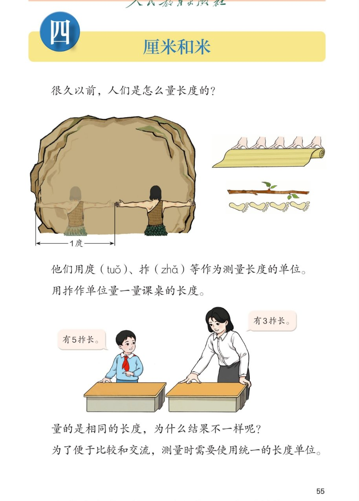

🔊 四、厘米和米 · 课本第 55 页 · 单元页
人教版《数学》二年级上册 · 有声图文带读 · 先想后看解析 · 古人怎样量长度
题数
6
认知
2
强化
3
拓展
1
本页重点
庹与拃 · 同样长度结果不同 · 需要统一长度单位
🎧 分两步学：
① 解析教材图片
——纯声音读图，读到哪一块哪一块闪动提示；关键处先倒计时让你思考，再在图片下方给出解析并朗读。
② 分层提问练习
——六道分层题（认知 / 强化 / 拓展），先思考再展开解析、朗读参考答案；这一步不再回到图片。
也可以随时点任意一句话、图上任意一块单独听；点课本文字卡还会展开答案。
教材图片（点块听读，读到哪块哪块闪）

📖 人教版《数学》二年级上册 · 课本第 55 页 · 图片仅供个人学习，版权归人民教育出版社所有
🤔 想一想（点我可跳过）
课本的文字（点句子：听读 + 看答案）
古代单位
庹（tuǒ）和拃（zhǎ）
看答案 ▾
庹
：两臂左右伸直的最大长度，量长东西（如石头、布）用；
拃
：拇指尖到中指尖张开的最大距离，量短东西（如课桌）用；
古人还用
脚长、步长
来量长度。
量课桌
同一张课桌：5 拃与 3 拃
看答案 ▾
男孩的手小，一拃短，量出
5 拃
；
老师的手大，一拃长，量出
3 拃
；
课桌是同一张，长度没变，变的是
拃的长短
。
想一想
为什么结果不一样？
看答案 ▾
单位不同 → 结果不同；
每个人的"拃"不一样长，量同一个东西得到的数就不一样；
💡 这就是下一页要学"统一的长度单位"的原因
关键句
需要统一的长度单位
看答案 ▾
统一单位后，你说 5 个单位长、我说 5 个单位长，指的就是
一样长
；
本单元要学的统一单位：
厘米
（量短的）和
米
（量长的）。
分层提问练习（先想后看解析）
🪨
认知
很久以前，人们用什么来量长度？
看解析
🤔 想一想
解析：
用
庹
、
拃
、
脚长、步长
等作为测量单位。
图上古人正张开两臂，用
1 庹
量石头的宽。
📏
认知
量同一张课桌，男孩和老师各量出几拃长？
看解析
🤔 想一想
解析：
男孩量出
5 拃
长，老师量出
3 拃
长。
两人
手的大小不同
，一拃的长短就不同。
🤔
强化
量的是相同的长度，为什么结果不一样？
看解析
🤔 想一想
解析：
课桌长度
没变
，变的是"一拃"的长短；
单位不同 → 结果不同
：拃短量的数大，拃长量的数小。
🌍
强化
为什么测量时需要统一的长度单位？
看解析
🤔 想一想
解析：
单位统一了，才能
比较
：5 厘米就是比 3 厘米长；
也才能
交流
：你说多长，别人一听就明白。
✋
强化
用拃量一量你身边的物体，说说怎么量？
看解析
🤔 想一想
解析：
张开拇指和中指比出一拃，从物体一端开始，
一拃挨一拃
量过去；
数一数一共几拃，就是物体大约几拃长。
💡 量的每拃要一样大，不能一会儿大一会儿小
🌈
拓展
如果没有统一的长度单位，生活里会遇到什么麻烦？
看解析
🤔 想一想
解析：
买布时你说 5 拃、店主以为 5 庹，尺寸就全乱了；
做桌椅、盖房子都没法准确配合。
🌈 所以全世界统一用厘米、米等长度单位
① 解析教材图片
② 分层提问练习
⏹ 停止
纯声音 + 高亮跟随 · 想好才出解析
← 返回导航